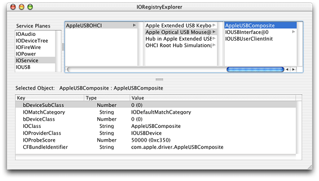

Finding and Accessing Devices
This chapter assumes you have an application or other user-space code that needs to access one or more specific types of device and that you:
Have determined that your application can’t satisfy its hardware needs with the higher-level APIs described in “Hardware-Access Options”
Are familiar with the I/O Kit summary information in “Device Access and the I/O Kit”
Want to know how to access hardware with an I/O Kit device interface or using the POSIX API
This chapter provides a generic blueprint for accessing devices with I/O Kit device interfaces and device files. It describes several ways to find devices in the I/O Registry and how to examine each device you find. It then describes how to access a device through a device interface or a device file.
Your code will implement many of the functions discussed in this chapter because some actions, such as getting a Mach port to communicate with the I/O Kit and looking up your devices in the I/O Registry, are common to all applications that use the I/O Kit API to access hardware.
Important: Bear in mind that individual I/O Kit families are free to define access to their devices as they choose. Although your application will follow the steps this chapter outlines, some of the particulars, such as determining matching keys and values, vary by family. Be sure to consult the documentation for the device family you’ll be working with.
This chapter describes how to use several I/O Kit and Core Foundation functions. You can view the header file describing the I/O Kit functions in /System/Library/Frameworks/IOKit.framework/Headers/IOKitLib.h and the Core Foundation functions in various files in /System/Library/Frameworks/CoreFoundation.framework/Headers. You can also view header documentation for these files on disk in /Developer/Documentation or on the web in the Device Drivers Reference Library. Complete sample projects are available in Sample Code > Hardware & Drivers and, when you install the Developer package, in /Developer/Examples/IOKit.
In this section:
Finding Devices in the I/O Registry
Examining Matching Objects
Putting It All Together: Accessing a Device
Finding Devices in the I/O Registry
Before you can communicate with your device through a device interface or using POSIX functions, you must first find it. If your device is plugged in, it’s represented in the I/O Registry, the dynamically updated database of all I/O Kit objects that make up a running Mac OS X system.
The I/O Kit provides functions you can use to find devices matching your criteria in the I/O Registry. This section describes the device-matching process in detail, showing how to use I/O Kit functions to create matching dictionaries and look up matching devices in the I/O Registry.
Important: Be aware that device matching is a family-specific task: Some I/O Kit families define special matching protocols or particular keys and values you must use with the I/O Kit functions this section describes. Family documentation (in header files in the I/O Kit framework) or device-access documents (available in the Device Drivers Reference Library) can help you determine how to implement device matching for your particular device.
Device Matching
Applications that use the I/O Kit to access hardware are typically looking for a particular device, such as an ATA, USB, FireWire, or other device. In the general case, if the desired device is plugged in to a Mac OS X system, there is an object that represents it attached in the I/O Registry. The process of finding this object is called device matching.
Recall that at boot time (and whenever devices are attached or removed), the I/O Kit:
Instantiates a nub object that represents the device
Attaches the nub to the I/O Registry
Registers the nub
The device family publishes device properties in the nub object, which the I/O Kit uses to find a suitable driver for the device. You can view these properties with the I/O Registry Explorer application (available at /Developer/Applications) or on the command line with ioreg.
To find devices in the I/O Registry, you perform the following steps:
Get the I/O Kit master port to communicate with the I/O Kit.
Find the appropriate keys and values that sufficiently define the target device or set of devices.
Use the key-value pairs to create a matching dictionary.
Use the matching dictionary to look up matching devices in the I/O Registry.
To perform these steps, you use a combination of I/O Kit and Core Foundation functions. The following sections describe each of these steps in detail.
Getting the I/O Kit Master Port
When your application uses functions that communicate directly with objects in the kernel, such as objects that represent devices, it does so through a Mach port, namely, the I/O Kit master port. Several I/O Kit functions require you to pass in an argument identifying the port you’re using. Starting with Mac OS X version 10.2, you can fulfill this requirement in either of two ways:
You can get the I/O Kit master port from the function
IOMasterPortand pass that port to the I/O Kit functions that require a port argument.You can pass the constant
kIOMasterPortDefaultto all I/O Kit functions that require a port argument.
In versions of Mac OS X prior to Mac OS X version 10.2, an application was required to use the first option and explicitly request the I/O Kit master port (you will encounter this procedure in older documentation and sample code). If you choose this method, you add code like the following to your application:
mach_port_t myMasterPort; |
kern_return_t result; |
result = IOMasterPort(MACH_PORT_NULL, &myMasterPort); |
Then, in calls to I/O Kit functions that require a port argument, such as IOServiceGetMatchingServices, you pass in myMasterPort, as in this example:
IOServiceGetMatchingServices(myMasterPort, myMatchingDictionary, |
&myIterator); |
When you’re completely finished with the port you received from IOMasterPort, you should release it, using mach_port_deallocate. Although multiple calls to IOMasterPort will not result in leaking ports (each call to IOMasterPort adds another send right to the port), it’s good programming practice to deallocate the port when you’re finished with it.
Starting with Mac OS X version 10.2, you can bypass this procedure entirely and use instead the convenience constant kIOMasterPortDefault (defined in IOKitLib.h in the I/O Kit framework). This means that when you call a function that requires the I/O Kit master port, such as IOServiceGetMatchingServices, you can pass in kIOMasterPortDefault instead of the mach_port_t object you get from IOMasterPort, as in this example:
IOServiceGetMatchingServices(kIOMasterPortDefault, myMatchingDictionary, |
&myIterator); |
Getting Keys and Values for a Device-Matching Dictionary
An application begins device matching by creating a matching dictionary that defines which device (or set of devices) the application needs to access. A matching dictionary is a Core Foundation CFMutableDictionaryRef object, containing a set of key-value pairs that describe particular device properties.
You have a few options for obtaining keys and values for device matching:
You can obtain matching keys from header files in
Kernel.frameworkorIOKit.frameworkand you can define constants for property values.You can examine driver personality information that is stored in on-disk drivers.
You can examine objects in the I/O Registry to obtain property information for the devices they represent.
Each of these options is described in the following sections.
Personality Property Keys and Values
The file IOKitKeys.h (located in the I/O Kit framework) defines many general matching keys, some of which are shown in Listing 3-1.
Listing 3-1 Matching keys from IOKitKeys.h
// Keys for matching IOService properties by name |
#define kIOProviderClassKey "IOProviderClass" |
#define kIONameMatchKey "IONameMatch" |
#define kIOPropertyMatchKey "IOPropertyMatch" |
#define kIOPathMatchKey "IOPathMatch" |
#define kIOLocationMatchKey "IOLocationMatch" |
#define kIOResourceMatchKey "IOResourceMatch" |
Figure 3-1 shows the AppleUSBComposite driver personality as it appears in I/O Registry Explorer (the AppleUSBComposite driver matches on composite-class USB devices for which there are no vendor-specific drivers). Notice that several of the keys in the AppleUSBComposite personality are defined in IOKitKeys.h.
Figure 3-1 The I/O Registry Explorer application, showing various keys and values for the AppleUSBComposite driver
One key of particular importance is the IOProviderClass key, which is included in all driver personalities. This key specifies the name of the nub class or nub superclass the driver attaches to. Although all device-matching dictionaries contain this key, few contain only this key because the resulting set of matching devices would be very large.
In most cases, you need to add more key-value pairs to make your matching dictionary more specific. By convention, keys for specific device properties are defined in device header files, such as IOSerialKeys.h, which defines property keys for serial devices, and IOHIDKeys.h, which defines property keys for HID (Human Interface Device) class devices. You can find these header files among the headers in the I/O Kit or Kernel frameworks. A partial listing of IOHIDKeys.h is shown in Listing 3-2.
Listing 3-2 HID class device matching keys from IOHIDKeys.h
#define kIOHIDDeviceKey "IOHIDDevice" |
#define kIOHIDTransportKey "Transport" |
#define kIOHIDVendorIDKey "VendorID" |
#define kIOHIDProductIDKey "ProductID" |
#define kIOHIDVersionNumberKey "VersionNumber" |
#define kIOHIDManufacturerKey "Manufacturer" |
#define kIOHIDProductKey "Product" |
#define kIOHIDSerialNumberKey "SerialNumber" |
#define kIOHIDLocationIDKey "LocationID" |
#define kIOHIDPrimaryUsageKey "PrimaryUsage" |
#define kIOHIDPrimaryUsagePageKey "PrimaryUsagePage" |
Your application must supply a value for each device-property key it uses in a matching dictionary. You may have access to header files that define values for these keys—for example, you may be working on an application to access a device driver supplied by your own company. If you don’t have predefined header files, you can define your own constants. For example, you can define property value constants for a device whose driver properties you have found with the I/O Registry Explorer application, as described in “Examining the I/O Registry.”
As a further example, suppose you have examined the keys and values for the driver of type IOUSBHIDDriver, in this case a driver for a joystick, shown in Figure 3-2.
To find the device this driver supports, you set up a matching dictionary to look up all HID class devices, using the kIOHIDDeviceKey (shown in Listing 3-2). Then, you can narrow the search to HID class devices on the USB bus by setting the transport key (identified by the constant kIOHIDTransportKey from IOHIDKeys.h) to the value “USB” as defined by the following constant in your code:
#define kMyDeviceTransportValue "USB" |
For more detail on how to modify a matching dictionary, see “Setting Up a Matching Dictionary to Find Devices.”
Examining Driver Personality Information
Another way to get the keys and values you need to describe a device is to examine the driver personality information in a device’s on-disk driver.
Before a device driver is loaded, it is stored on disk or in ROM as a kernel extension, or KEXT. KEXTs are usually located in /System/Library/Extensions. A KEXT file on disk is a bundle that contains other files and folders. Each driver KEXT includes an information property list, in XML format, typically in a file named Info.plist. The property list includes one or more driver personalities—dictionaries whose properties specify which devices the driver is suitable to manage.
A KEXT usually stores its Info.plist file in its Contents directory. You can examine its property list with the Property List Editor application (which is located in /Developer/Applications), by displaying it in the Terminal application (using more or another text-display command), or by opening the property list with an application such as Xcode. Listing 3-3 shows a partial dictionary listing for the AppleFWAudio driver. It contains keys such as the class key and the provider class key, as well as values for these keys (the strings “AppleFWAudioDevice” and “IOFireWireAVCUnit,” respectively).
Listing 3-3 A partial listing of the personality dictionary for the AppleFWAudio driver
<key>IOKitPersonalities</key> |
<dict> |
<key>AppleFWAudioDevice (AVC)</key> |
<dict> |
<key>CFBundleIdentifier</key> |
<string>com.apple.driver.AppleFWAudio</string> |
<key>IOClass</key> |
<string>AppleFWAudioDevice</string> |
<key>IOProviderClass</key> |
<string>IOFireWireAVCUnit</string> |
... |
</dict> ... |
By examining a driver’s personality dictionary, your application can determine the keys and values to put in a matching dictionary to specify that driver’s device.
Examining the I/O Registry
You can examine the I/O Registry to obtain driver personality keys and values to use in a matching dictionary. When the I/O Kit loads a driver for a device, it stores a copy of the matching personality information for that device in the I/O Registry. The developer version of Mac OS X includes the I/O Registry Explorer application, which displays the I/O Registry for your currently running system. You can see examples of I/O Registry Explorer’s display in Figure 3-1 and Figure 3-2.
The developer version of Mac OS X also includes ioreg, a tool you can use to examine the I/O Registry. You run the tool in a Terminal window to display I/O Registry information for your current system. Using the application or the tool, you can examine the personality information of loaded drivers and the property information in device nubs.
If you find driver personality keys and values you want to use in your application, you may be able to obtain constants for them in Apple or third-party headers, or you may need to define your own constants. For more information, see “Personality Property Keys and Values”.
Setting Up a Matching Dictionary to Find Devices
When you’ve determined the keys and values that define your device, you can use that information to set up a matching dictionary to find the device in the I/O Registry. The I/O Kit provides functions that create a CFMutableDictionary object containing a specific key and the value you pass to it. Bear in mind, however, that you are not limited by the dictionaries these functions create. If you require a different or more focused search, you can modify these dictionaries or even create your own, as described later in this section.
You can use any of the following I/O Kit functions to create a matching dictionary:
IOServiceMatchingcreates a dictionary you can use to match on an object’s class or superclass. The dictionary thatIOServiceMatchingcreates consists of theIOProviderClasskey and the value you pass toIOServiceMatching.You can initiate a very broad search of the I/O Registry by using
IOServiceMatchingto create a dictionary that matches on a specific object class (and its subclasses). For example, you can create a dictionary to match on all objects of class IOUSBDevice by using code like the following:CFMutableDictionaryRef myUSBMatchDictionary = NULL;
myUSBMatchDictionary = IOServiceMatching(kIOUSBDeviceName);
IOServiceNameMatchingcreates a dictionary that consists of the keyIONameMatchand the value you pass to the function.You might use
IOServiceNameMatchingto create a dictionary that matches on a device’s name, rather that its class, perhaps if your company’s device has a unique name. For example:CFMutableDictionaryRef myCompanyDeviceMatchDictionary = NULL;
myCompanyDeviceMatchDictionary = IOServiceNameMatching("MyCompany");IOBSDNameMatchingcreates a dictionary you can use to find devices that have device-file representations in the BSD layer, such as storage devices. The dictionary theIOBSDNameMatchingfunction creates consists of thekIOBSDNameMatchingkey (defined inIOKitServer.h) and the name of the device file you pass to the function.If you’ve determined the device-file name of your device (by, for example, looking in the
/devdirectory using the Terminal application), you can create a dictionary to match on it using theIOBSDNameMatchingfunction, using code like the following:CFMutableDictionaryRef myBSDMatchDictionary = NULL;
myBSDMatchDictionary = IOBSDNameMatching(kIOMasterPortDefault, 0,
"disk1s8");
Note that
IOBSDNameMatchingexpects only the device-file name in the last parameter, not the complete path.It’s possible for a storage device to receive a different device-file name each time the I/O Kit discovers it, however, so your code should not rely on a device-file name remaining unchanged.
You use the dictionaries these I/O Kit functions create to pass to one of the I/O Kit look-up functions (described in “Looking Up Devices in the I/O Registry”). The I/O Kit look-up functions each consume one reference to the dictionary. If you use the dictionary in some other way, however, you must use CFRelease to release it when you’re finished.
The I/O Kit dictionary-creation functions each create a dictionary with a single key-value pair. Unless you’re looking for a device that is sufficiently described by such a key-value pair, you probably want to either modify one of these dictionaries or create your own.
Important: Because CFMutableDictionary is a standard Core Foundation data type, you can use Core Foundation functions to modify a matching dictionary or to create your own from scratch. For more information on Core Foundation collection objects, such as dictionaries, see the Core Foundation Reference Library.
Many I/O Kit families define matching rules that help you narrow down your search. The USB family, for example, bases its matching rules on the USB Common Class specification. Before you modify an existing dictionary or create one of your own, you should become thoroughly familiar with your device family’s matching rules. This is especially important when you use your matching dictionary to search the I/O Registry. The I/O Kit look-up functions apply family-defined matching rules so it is essential for your matching dictionary to contain the correct combination of properties.
To modify an existing dictionary, you get a generic dictionary, such as one created by IOServiceMatching, and use the Core Foundation function CFDictionaryAddValue to add other key-value pairs. For example, to find a FireWire unit, you can call IOServiceMatching to create a dictionary containing the key IOProviderClass and the value IOFireWireUnit. Then, a call to CFDictionaryAddValue modifies the dictionary by adding the IOFireWire family–defined key Unit_SW_Version and the application-defined value myFireWireUnitSWVersionID. Listing 3-4 shows how to do this.
Listing 3-4 Modifying a matching dictionary
CFMutableDictionaryRef matchingDictionary = |
IOServiceMatching("IOFireWireUnit" ); |
UInt32 value; |
CFNumberRef cfValue; |
value = myFireWireUnitSwVersionID; |
cfValue = CFNumberCreate( kCFAllocatorDefault, kCFNumberSInt32Type, &value ); |
CFDictionaryAddValue( matchingDictionary, CFSTR( "Unit_SW_Version" ), |
cfValue); |
CFRelease( cfValue ); |
Occasionally, you may find that you must perform a look-up on a handful of properties that don’t follow any device family’s matching rules. Perhaps there are no family-defined matching rules for the device you’re interested in or you’re creating a tool to test device matching. Although you should always follow your device family’s matching rules (when they exist), you can use the special IOPropertyMatch key (defined in IOKitKeys.h in the I/O Kit framework) to create a dictionary containing a set of arbitrary matching properties.
To do this, you create two dictionaries: one that contains the set of key-value pairs that describe your device and one that contains the IOPropertyMatch key and your first dictionary as its value. You use the Core Foundation function CFDictionaryCreateMutable to create both dictionaries. The following code fragment shows how to create the subdictionary (the dictionary containing your key-value pairs that you’ll place in your matching dictionary):
CFMutableDictionaryRef mySubDictionary; |
mySubDictionary = CFDictionaryCreateMutable(kCFAllocatorDefault, 0, |
&kCFTypeDictionaryKeyCallBacks, |
&kCFTypeDictionaryValueCallBacks); |
CFDictionarySetValue(mySubDictionary, CFSTR(kMyDevicePropertyKey), |
CFSTR(kMyDevicePropertyValue)); |
Now you use CFDictionaryCreateMutable again, this time to create your matching dictionary. The matching dictionary should contain only the key IOPropertyMatch and your subdictionary as its value. The IOPropertyMatch key signals the I/O Kit to match on the set of properties in the subdictionary without regard to any family-defined matching rules. The following code fragment shows how to create your matching dictionary:
CFMutableDictionaryRef myMatchingDictionary; |
myMatchingDictionary = CFDictionaryCreateMutable(kCFAllocatorDefault, 0, |
&kCFTypeDictionaryKeyCallBacks, |
&kCFTypeDictionaryValueCallBacks); |
CFDictionarySetValue(myMatchingDictionary, CFSTR(kIOPropertyMatchKey), |
mySubDictionary); |
The callback constants kCFTypeDictionaryKeyCallBacks and kCFTypeDictionaryValueCallBacks define Core Foundation callback structures you can use when the keys and values in your dictionary are all CFType-derived objects. You can find documentation about these structures in the Core Foundation Reference Library.
Setting Up a Matching Dictionary to Find Device Files
You set up a matching dictionary to find serial or storage devices using the same I/O Kit dictionary-creation functions you use for other types of matching dictionaries. As with other devices, the provider-class name you use to create a matching dictionary depends on the type of device you’re looking for:
All serial devices can be identified by the provider class IOSerialBSDClient. The
IOProviderClasskey you send toIOServiceMatchingto create a matching dictionary iskIOSerialBSDServiceValue, defined inIOSerialKeys.hin the I/O Kit framework.Because each serial device object in the I/O Registry has a property with the key
kIOSerialBSDTypeKey, you can refine your dictionary to match on specific types of serial devices. Currently, the possible values for this key (also defined inIOSerialKeys.h) arekIOSerialBSDAllTypes,kIOSerialBSDModemType, orkIOSerialBSDRS232Type.Storage device objects are members of the Storage family and their provider class is usually IOMedia, but can also depend on the device type. CD devices, for example, are subclasses of IOCDMedia. Check the Storage family header files (available in the I/O Kit framework) for the appropriate provider-class key to pass to
IOServiceMatching.Also check the header files for additional keys and values you can use to refine your matching dictionary, such as the
kIOMediaEjectableKey, which identifies whether the media is ejectable.
After you’ve created a matching dictionary, you pass it to one of the I/O Kit look-up functions. If devices matching your criteria exist in the I/O Registry, the look-up function returns an iterator you can use to access each matching object.
Looking Up Devices in the I/O Registry
Device look-up is at the heart of the device-matching process: It consists of searching the I/O Registry for device objects that match the criteria specified in a matching dictionary. The I/O Kit contains a few functions that perform device look-up and provide access to objects that match your matching dictionary:
IOServiceGetMatchingServicesfollows the family-defined matching rules (if any) to find registered objects that match the passed-in matching dictionary. It supplies an IOIterator object that you can use to access the set of matching objects.IOServiceGetMatchingServiceis similar toIOServiceGetMatchingServicesexcept that it returns only the first IOService object that matches the passed-in matching dictionary. Because it returns the first matching IOService object itself,IOServiceGetMatchingServicedoes not give you an iterator that allows you to access other objects that may meet the matching criteria. You might choose to use this function if you’re reasonably certain you can create a matching dictionary that will match only on your device and you want to bypass the code that iterates over a list of matching devices.IOServiceGetMatchingServicealso strictly follows the matching rules defined by the value of the passed-inIOProviderClasskey.IOServiceAddMatchingNotificationfollows the family-defined matching rules (if any) to find objects matching the passed-in matching dictionary whose state changes in the way you identify. When a matching object’s state change matches the state change you’re interested in (such as being registered or terminated),IOServiceAddMatchingNotificationnotifies the caller and provides an iterator with which to access the set of matching objects.Your application can use
IOServiceAddMatchingNotificationto receive notification of when matching devices come or go. This is particularly useful for applications that need to access hot-pluggable devices, such as FireWire or USB devices. For an outline of how to receive notifications about matching devices, see “Getting Notifications of Device Arrival and Departure.”
The I/O Kit look-up functions each consume one reference to the matching dictionary you pass to them. If you need to use the dictionary again, be sure to increase its reference count by callingCFRetain on it before you send it to a look-up function.
If you use a look-up function that returns an iterator (IOServiceGetMatchingServices or IOServiceAddMatchingNotification), your application must release this iterator when it is finished with it. In the case of IOServiceAddMatchingNotification, make sure you release the iterator only if you’re also ready to stop receiving notifications: When you release the iterator you receive from IOServiceAddMatchingNotification, you also disable the notification. If you use IOServiceGetMatchingService, your application is responsible for releasing the object reference it receives.
Applications typically use these look-up functions to find device nubs whose property information matches the criteria defined in the application’s matching dictionary. Occasionally, however, an application looks for a driver in the I/O Registry, instead of a nub. Your application would look for a driver, for example, if you’re writing both the application and the in-kernel driver and intend for them to work together. A key point is the distinction between drivers and nubs: Nubs are always registered in the I/O Registry (it’s the act of registration that triggers driver matching), but drivers can be attached in the I/O Registry without being registered. This is important, because the I/O Kit look-up functions find only registered objects. To find an unregistered object, you start by finding its registered provider or client and use an I/O Registry traversal function to step to the object you’re looking for.
If, for example, your application needs to access an unregistered object, you must first identify the object’s immediate parent or child, whichever is easiest to find. Let’s say you can find the registered child of the object you want: You create a matching dictionary that describes the child object and pass it to IOServiceGetMatchingServices. You useIOIteratorNext (discussed in “Examining Matching Objects”) to get access to the child object and then use the I/O Kit function IORegistryEntryGetParentEntry to get access to its unregistered parent object. For more information on the I/O Registry traversal functions the I/O Kit provides, see “The IOKitLib API.”
Getting Notifications of Device Arrival and Departure
If you’re working with hot-pluggable devices, such as FireWire or USB devices, you can use I/O Kit and Core Foundation functions to set up a mechanism that notifies you when the devices you’re interested in come or go. To set up such a mechanism, follow these steps:
Use the
IONotificationPortCreatefunction to create a notification object that can listen for I/O Kit notifications, either on a run loop or a Mach port (these steps show only the recommended run-loop approach—for a brief description of the functions you use to set up a notification mechanism with a Mach port, see “The IOKitLib API”):IONotificationPortRef notificationObject;
mach_port_t masterPort; //This is the port you received from IOMasterPort.
//Alternatively, you can pass kIOMasterPortDefault to the
//IONotificationPortCreate function.
notificationObject = IONotificationPortCreate(masterPort);
Create a run-loop source for the notification object, using the
IONotificationPortGetRunLoopSourcefunction:CFRunLoopSourceRef notificationRunLoopSource;
//Use the notification object received from IONotificationPortCreate
notificationRunLoopSource =
IONotificationPortGetRunLoopSource(notificationObject);
Add the run-loop source to your run loop (usually, your application’s current run loop), using the Core Foundation
CFRunLoopAddSourcefunction:CFRunLoopAddSource(CFRunLoopGetCurrent(), notificationRunLoopSource,
kCFRunLoopDefaultMode);
Call the
IOServiceAddMatchingNotificationfunction, passing it the following arguments:The notification object you received from
IONotificationPortCreateA constant defining the type of event you want notification of, such as device registration or termination (these constants are defined in
IOKitKeys.hin the I/O Kit framework)The Core Foundation matching dictionary you’ve created to define the types of devices you’re interested in
The function you want called when a matching device’s state changes in the way you’ve identified
An optional reference constant for your callback function’s use
An
io_iterator_tobject to access the list of matching devices
Call
IOIteratorNext(discussed in “Examining Matching Objects”) to access the matching devices that are already present in the I/O Registry and to arm the notification mechanism so you will receive notifications of future matching devices as your run loop runs.Call the Core Foundation
CFRunLoopRunfunction to start the run loop and receive notifications when new matching devices arrive.
Examining Matching Objects
After you’ve successfully created a matching dictionary and passed it to one of the I/O Kit look-up functions, you receive an iterator you can use to access the list of matching objects. (Of course, if you used IOServiceGetMatchingService, you instead receive a reference to the first matching object itself, not an iterator.) The iterator is an object of class IOIterator and this section describes how you use it to examine a set of matching objects.
When you get an iterator from IOServiceGetMatchingServices, you pass it to the I/O Kit functionIOIteratorNext, which returns a matching object from the list. With the matching object in hand, you can directly examine the properties it publishes in the I/O Registry. You might do this to determine if an object does, in fact, represent the device you want to access or if you want to display information about the matching device to a user.
The IOIteratorNext function returns an object of typeio_object_t, which the caller should release when it is finished. Each call to IOIteratorNext returns the next object in the list of matching objects or zero if there are no more objects or if the iterator is no longer valid. If you receive zero when you think there may still be more matching objects in the list, you can call the IOIteratorIsValid function to make sure the iterator is still valid. In the unlikely case that the iterator is invalid, it’s usually because the I/O Registry has changed in some way. If your iterator has become invalid, the best thing to do is to call the I/O Kit functionIOIteratorReset and begin iterating again.
Now that you have an io_object_t object representing one of the matching objects in the list, you can use other I/O Kit functions to examine it more closely. For example, you can call IOObjectGetClass to see the class name of the passed-in object. To look at a specific property, you can pass the corresponding property key to IORegistryEntryCreateCFProperty, which returns a Core Foundation representation of that property’s value. See “The IOKitLib API” for more object-examination functions.
Putting It All Together: Accessing a Device
Previous sections described how to:
Find keys and values that identify a device’s properties
Use the keys and values to create a matching dictionary
Use the matching dictionary to look up matching devices in the I/O Registry
This section builds on that information to show how to get a device interface (or the pathname for a device file) and begin communicating with a device.
Let’s assume you used the IOServiceGetMatchingServices look-up function to find matching devices. This means that you received an iterator handle you can pass to the IOIteratorNext function to access each device object in turn. Whether you iterate over the entire list, examining each device, or just grab the first device in the list, the next step is communication with the device—a step that differs depending on whether you access the device through a device interface or a device file.
Getting a Device Interface
As described in “Device Access and the I/O Kit,” many I/O Kit families supply device interfaces that provide user-space access to the devices they support. This section presents information that is appropriate for many types of device families but may vary from the specifics of any particular family.
As always, be sure to check the documentation for your device’s family before implementing the steps outlined in this section.
When you’ve determined that the io_object_t object you received from IOIteratorNext represents a device you want to access, you first create an intermediate Core Foundation plug-in interface for it, using the IOCreatePlugInInterfaceForService function (defined in IOCFPlugIn.h in the I/O Kit framework).
Before you get the intermediate plug-in, however, you must know which device interface type you need to get. I/O Kit families that support device interfaces define both an interface type that represents the collection of interfaces they provide and each individual interface in the type. You can get this information from your device family’s header files. For example, Listing 3-5 shows the USB family’s definition of the kIOUSBDeviceUserClientTypeID (its library of device interface types) and the kIOUSBDeviceInterfaceID (one of the individual device interfaces it provides).
Listing 3-5 Device interface definitions from IOUSBLib.h
#define kIOUSBDeviceUserClientTypeID CFUUIDGetConstantUUIDWithBytes(NULL, \ |
0x9d, 0xc7, 0xb7, 0x80, 0x9e, 0xc0, 0x11, 0xD4, \ |
0xa5, 0x4f, 0x00, 0x0a, 0x27, 0x05, 0x28, 0x61) |
... |
#define kIOUSBDeviceInterfaceID CFUUIDGetConstantUUIDWithBytes(NULL, \ |
0x5c, 0x81, 0x87, 0xd0, 0x9e, 0xf3, 0x11, 0xD4, \ |
0x8b, 0x45, 0x00, 0x0a, 0x27, 0x05, 0x28, 0x61) |
To get an intermediate interface, you pass the following information to IOCreatePlugInInterfaceForService:
The device reference (the
io_object_tyou received fromIOIteratorNext)The family’s library type ID (from the family’s header files)
The intermediate plug-in type (always
kIOCFPlugInInterfaceID, defined inIOCFPlugIn.h)The address of an IOCFPlugInInterface object (to contain the intermediate plug-in)
The address of an integer variable (currently unused)
Listing 3-6 shows an application using IOCreatePlugInInterfaceForService to get an intermediate plug-in interface for the FireWire family’s IOFireWireLib (one of the FireWire family’s device interface libraries).
Listing 3-6 Getting an intermediate IOCFPlugInInterface object
IOCFPlugInInterface** cfPlugInInterface = 0; |
IOReturn result; |
SInt32 theScore; |
// aDevice is the io_object_t from IOIteratorNext. |
result = IOCreatePlugInInterfaceForService( aDevice, kIOFireWireLibTypeID, |
kIOCFPlugInInterfaceID, &cfPlugInInterface, &theScore ); |
Now that you have an intermediate interface, you use it to get the specific type of device interface you need. Again, see your device family’s header files for the definitions of specific device interface names. To get a particular device interface, you use the QueryInterface function of the IOCFPlugInInterface, passing it the following arguments:
A reference to the IOCFPlugInInterface (received from the call to
IOCreatePlugInInterfaceForService)The UUID of the device interface (you use the Core Foundation function
CFUUIDGetUUIDBytesto get the actual UUID from the family’s device interface constant)The address of the device interface (to contain the new device interface)
Listing 3-7 shows an application using an intermediate IOCFPlugInInterface object to get the SCSI Architecture Model family’s MMC (Multimedia Commands) device interface (defined in SCSITaskLib.h in the I/O Kit framework).
Listing 3-7 Getting a specific device interface object
HRESULT herr; |
MMCDeviceInterface **mmcInterface = NULL; |
// plugInInterface is the IOCFPlugInInterface object from |
// IOCFCreatePlugInInterfaceForService. |
herr = ( *plugInInterface )->QueryInterface ( plugInInterface, |
CFUUIDGetUUIDBytes ( |
kIOMMCDeviceInterfaceID ), |
( LPVOID *) &mmcInterface ); |
The device interface provides you with a wide range of functions you can use to access your device. With an IOFireWireDeviceInterface object, for example, you can perform a FireWire bus reset or create FireWire command object interfaces to perform asynchronous read, write, and lock operations. When you’re finished with the device interface you acquired, you should call the IOCFPlugIn Release function to release it.
After you are completely finished with the specific device interface object, you should get rid of the intermediate IOCFPlugInInterface object by calling the IODestroyPlugInInterface function, defined in IOCFPlugIn.h.
Getting a Device-File Path
Before you can access a serial or storage device, you use I/O Kit functions to extract specific properties from the I/O Registry object that represents it and use them to create the device-file path. As described in “Inside the Device-File Mechanism,” device-file paths are usually of the form /dev/device_name, where device_name is defined by the type of device.
Important: The process of getting the pathname of a serial or storage device differs slightly depending on the type of device you’re accessing, however, so be sure to read the documentation for your device type to get specific information on where the device name and path components are defined.
In general, you create the device-file path either by getting a C-string representation of a particular property or by concatenating strings defined in various properties or constants. To get the C-string representation for a property, you first use the I/O Kit function IORegistryEntryCreateCFProperty to get the property value as a Core Foundation string object. Then, you use the Core Foundation function CFStringGetCString to transform the CFString object into a C string.
For example, Listing 3-8 shows how to get the device name of a storage device from the value of the kIOBSDNameKey (defined in IOBSD.h) and use this string, along with a constant string defined in paths.h, to create the full device-file path.
Listing 3-8 Getting the device name of a storage device
io_object_t device; //This is the object IOIteratorNext returns |
char deviceFilePath[MAXPATHLEN]; //MAXPATHLEN is defined in sys/param.h |
size_t devPathLength; |
CFTypeRef deviceNameAsCFString; |
Boolean gotString = false; |
deviceNameAsCFString = IORegistryEntryCreateCFProperty ( |
device, |
CFSTR(kIOBSDNameKey), |
kCFAllocatorDefault,0); |
if (deviceNameAsCFString) { |
deviceFilePath = '\0'; |
devPathLength = strlen(_PATH_DEV); //_PATH_DEV is defined in paths.h |
strcpy(deviceFilePath, _PATH_DEV); |
//Add "r" before the BSD node name from the I/O Registry |
//to specify the raw disk node. The raw disk node receives |
//I/O requests directly and does not go through the |
//buffer cache. |
strcat(deviceFilePath, "r"); |
gotString = CFStringGetCString( deviceNameAsCFString, |
deviceFilePath + strlen(deviceFilePath), |
MAXPATHLEN - strlen(deviceFilePath), |
kCFStringEncodingASCII); |
if (gotString) |
printf("Device file path: %s\n", deviceFilePath); |
//deviceFilePath will look something like /dev/rdisk1 |
} |
Now that you have the device file pathname as a C string, you can use it with standard POSIX functions, such as open, read, and close, to access the device.
© 2001, 2007 Apple Inc. All Rights Reserved. (Last updated: 2007-02-08)